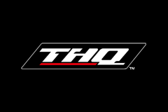

Star Wars - Episode II - Attack of the Clones (USA)
Stateless / Passcode
Cartridge Identity
- Game Code
AS2E(FamilyAS2)- Header Title
STAR WARS EP- Maker / Revision
78/ rev0- ROM Size
- 8.0 MiB (8,388,608 B)
- Save Media
None / Unknown- SHA-256
ab3ae5f9d411aa4f6268135d524d34e033b92196a1fcbff2a672e3ca37d0a518
Screenshots

Cartridge Storage Architecture: Stateless / Passcode
Zero non-volatile battery hardware: This cartridge PCB contains ROM only (no SRAM, Flash, or EEPROM chips). Progression is preserved via on-screen passcodes or session-only gameplay. No
.sav file is generated or required.